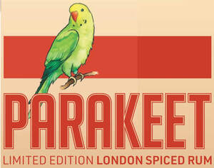

Trade Mark Journal No.2025/033 15 August 2025
UK00004243948 4 August 2025 (16,21,25,32,33)

- Class 16
- Printed publications; printed course materials in the field of cocktails; paper; magazines; books; menus; napkins and coasters of paper; postcards; note pads; paperweights; writing instruments; photographs; posters; stationery products; printed matter, namely, books, leaflets, magazines, newsletters in the field of catering, cookery, food and drink; recipe books; printed publications, namely, books, leaflets, magazines, newsletters in the field of catering, cookery, food and drink; printed instructional and teaching materials in the field of catering, cookery, food and drink; booklets in the field of catering, cookery, food and drink; calendars; newspapers; newsletters in the field of catering, cookery, food and drink; periodicals in the field of food and drink; comics; pamphlets in the field of food and drink; paper handkerchiefs; paper napkins; paper tablecloths; coasters made from cardboard or paper; paper place mats. .
- Class 21
- Bottles; bottle pourers; bottle stands; glass bottles; bottle openers; household or kitchen utensils; beer jugs; beer mugs; beverage glassware; bowls; bread boards; cocktail shakers; coffee cups; colanders; coffee grinders; cookery moulds; cooking pot sets; cooking utensils; corkscrews; cups and mugs; decanters; dishware; ice cube trays; jugs; lunchboxes; mugs; tableware, cookware and containers; kitchen utensil jars; paper cups; paper plates; woks; picnic crockery; picnic boxes.
- Class 25
- Clothing, footwear and headgear; articles of outer clothing; articles of underclothing; headgear; scarves; boxer shorts; socks; t-shirts, hats and caps, jackets, pyjamas, slippers; wristbands, headbands, ties, shirts, pullovers, skirts, dresses, trousers, coats, jackets, belts, scarves, gloves, neckties, socks, swimsuits; caps; athletics shoes; hats; baseball caps; aprons; chefs' whites.
- Class 32
- Beers; mineral and aerated waters and other non-alcoholic drinks; fruit drinks and fruit juices; syrups and other preparations for making beverages.
- Class 33
- Rum; rum-based beverages; spiced rum; white rum; wine; gin; vodka; whisky; brandy; liqueurs; spirits [beverages]; distilled beverages; digestifs [liqueurs and spirits]; aperitifs; alcoholic beverages containing fruit; pre-mixed alcoholic beverages, other than beer-based; alcoholic essences; alcoholic extracts; bitters; cider; perry; sake; mead (hydromel); rice alcohol; herbal liqueurs.
MAISON BARRAN MILES LTD
Representative: Lawrence Stephens Limited